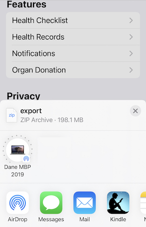

- Fri 13 May 2022
- posts
- Dane Collins
- #Data Watch
Overview
Data from an Apple Watch will automatically synchronize with the Heath app on your phone. You can then use the Health app to extract this information and transfer it to a computer for analysis. This post will walk through the process.
Extracting the Data
Note: It can take several minutes to extract the data from the Health app which should not be interrupted so plan accordingly.
Open the Health App
Open User Page
At the top of the Summary screen, on the right side, is your user profile button.
Shown as a small circle with the your initials. Select this button to display the User Profile.
Export the Data
Scroll to the bottom of the Profile to reach the Export command,
and press the button. A pop-up will be displayed asking if you are sure and select Export
Transfer to Your Computer
At the end of the export you will be given the option to Share the data. This is the step where we want to transfer the data file to a computer. If you have AirDrop setup this is the easiest, and fastest, way to move the data.

The exported file is named export.zip and is a compressed archive of your health data.
If you don't have AirDrop, then you can tranfer it using email although this can be a problem as the file can be quite large (200Mb in my case).